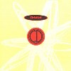
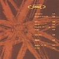
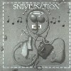
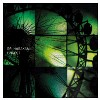

strange music page
overseas * * * techno
テクノミュージックです。ずーっと興味を持たないまま成長してたんですけど(テクノポップは好きだったんだけど)orbitalの2枚目を聴いてはまっちゃいました。
最近はu-ziq好きです、トランス系のテクノが多いのかな?(ジャンルわからないので)踊るような音はあんまり無いです。
aphexとかu-ziqとか。
|
- the orb
- Orbital
- 砂原良徳
- KEN ISHII
- rei harakami
- system 7
- SUN ELECTRIC
- UBAR TMAR
|
#近所の中古屋さんで、3枚\900コーナーにて拾い。うーん、昔はこんなんだったんですね(ORBVS TERRARVMからしか聴いてない)基本的にトランスなんですけど、最近の程ディープな世界では無いかも。
- little fluffy clouds
- earth (gaia)
- supernova at the end of the universe
- back side of the moon
- spanish castles in space
- perpetual dawn
- into the fourth dimension
- outlands
- star 6 & 7 8 9
- a hugh ever growing pulsating brain that rueles from the centre of the ultraworld: live mix mk 10
big life records: BLRDCD-5 (1991)
#
M.Oldfield(エクソシストの映画のテーマを作った人)のオーブによるリミックスです。
原型ほとんど無いんですけど繰り返しのフレーズ一発で「オールドフィールドだっ！」って分かってしまうのは強烈。アルバムタイトル
versus
って入ってるのもうなずけます。
オールドフィールド本人が自分の作品をリミックスしたようなモノを沢山出してるのでそんなに新鮮な感じはしませんでしたけど。地元の中古屋で\100でした。(2001.3.3)
- sentinel nobel prize mix
- sentinel orbular bells
- sentinel seven inch mix
written by mike oldfield
remiexd by the orb
warner music: YZ698CDX (1992)
#サイコーのトランスです、1曲目から脳の中にスーっと拡散/浸透していきます。とにかく快感を追求した音楽。ボリューム大きくして、ヘッドホンで聴きたい。
- VALLEY
- PLATEAV
- OXBOW LAKES
- MONTAGNE D'OR [DER GVTE BERG]
- WHITE RIVER JVNCTION
- OCCIDENTAL
- SLVG DVB
Mercury Music Entertainment: PHCR-1777 (original release 1995.3.20,Island)
#弟から奪取。オービタル1枚目、これは2枚目とセットですね。別に極端な事は無いんですけど、四つ打ちがこんなに気持ちのイイ人達も他に居ないんで。

- Belfast
- The Moebius
- Speed Freak (Moby Remix)
- Fahrenheit 3D3
- Desert Storm
- Ooiaa
- Chime
- Satan
- Choice
- Midnight
#茶色いヤツ、これが2枚目です。その頃プログレばっかし聴いてた私が(テクノポップじゃなくて)テクノを聴くきっかけになった1枚。
かーっちょいいです。特に7曲目の電子音の大暴れするところへの繋ぎとか、とても繰り返し聴いてました。いまだに好きな一枚。

- Time becomes
- PLANET F THE SHAPES
- LUSH 3-1
- LUSH 3-2
- IMPACT (The earth is burning)
- REMIND
- WALK NOW...
- MONDAY
- HALCYON + ON + ON
- Input out
- Phil Hartnoll
- Paul Hartnoll
POLYDOR: POCD-1115 (1993.7.25)(original release 1993.5.24 - internal records)
#オービタルの3枚目です、結構多彩な曲想になっています、リズムも音質も多用な種類が用いられて、現代音楽の影響を感じるものも有り、テクノという視点だけで聴くのは勿体無いくらいです。
んでも、ちょっと散漫な印象になったような気もします。やっぱ前作のテクノ的な快感のほうが良かったかな。

- Forever
- I Wish I Had Duck Feet
- Sad But True
- CCrush And Carry
- Science Friction
- Phisolosophy By Numbers
- Kein Trink Wasser
- Quality Seconds
- Are We Here?
- Attached
- Phil Hartnoll
- Paul Hartnoll
POLYDOR: POCD-1145 (1994.8.25)(original release 1994.8.8,internal records)
- The Girl With The Sun In Hear Head
- P.E.T.R.O.L.
- The Box
- The Box
- Dwr Budr
- Adnan's
- Out There Somewhere?
- Out There Somewhere?
- Phil Hartnoll
- Paul Hartnoll
- Antie (vocals)
- Clune (drumming)
INTERNAL RECORDS: 828-763-2 (1996)
#買っちまいました、すげー良いです、渋谷タワレコにて定価。
なんかテクノらしいテクノを久しぶりに聴いた気がします。音色気持ち良いし、リズム気持ち良いし、何よりオービタルらしい心地よいメロディが印象的でした。
これが3年振りの新譜になるみたいですけど、もう開き直って本当に2枚目とかに近い感じになっています、SnivilisationとかIn Sidesとか結構複雑でシリアスな内容な印象があったんですけど、これはポジティブでポップ。聴いてて楽しいです。あ、あとジャケットも最高に好き。(1999.5.1)

- Way Out ->
- Spare Parts Express
- Know Where to Run
- I Don't Know You People
- Otono
- Nothing Left 1
- Nothing Left 2
- Style
- Phil Hartnoll
- Paul Hartnoll
POLYDOR: POCD-1295 (1999.4.21)(original release 1999.4.5,FFRR)
- earth beat
- balance
- in and out
- lovebeat
- sprial never before
- echo endless echo
- hold'on tight
- sun beats down
- bright beat
- the center of gravity
KI/OON SONY RECORDS: KSC2-387 (2001.5.23)
#武蔵新城の古本屋で\800でした。Ken Ishiiの初期のコンピかな？"GARDEN ON THE PALM"は聴いた事有るので、半分くらい知ってるのですが結構良かったです。"BLUE METAL AMERICA"は駄目だったからなー。
やっぱこの頃の内にこもった世界は結構好きみたいです、なんか一人で作った純粋さというか。スピリチュアル？そんな感じかも。
- ENCODING
- A.F.I.A.C.
- TWIST OF SPACE
- QF
- GARDEN ON THE PALM
- PNEUMA
- SPONGE
- RADIATION 03
- LOOP
- FRAGMENTS OF YESTERDAY
- KALA
- DECODING
R&S RECORDS: RS-94038-CD
#新譜、前作がなんかスカスカというか空回りしてて面白くなかったKEN ISHIIですけが、今回はタイトルからして好みそうだったので期待してました。
多少前作の雰囲気も残しつつ、GARDEN OF THE PALMの頃のような内向性が戻ってきたかな？どっかでベッドルームテクノって言葉がありましたけど。
やっぱりこれも弟の持ち物(1999.9.3)
- Khaotic Khaen
- Misprogammed Day
- Where Is The Dusk
- Enso Online (Featuring DJ Spooky That Subliminal Kid)
- 24bit Optimist
- Bugged-in Fusion
- Water Dripping Down On The Middle Of The Forehead (Featuring Talvin Singh)
- Game Over (Featuring Co-Fusion)
- Missing Melody
- Sleeping Madness
- Misted
DISC 2
- Hedgehopping
- All Of Us (Featuring The Deckwrecka)
Associated Records: AICT-71,72 (1999.5.21)
#やばいっす、気持ちよすぎ。

- On
- More Elbow
- Dessert
- Wreck
- Rho
- Pass
- Vice Versa
- Code
- Objective Contents
- Bioscape
- Unrest
SUBLIME RECORDS: MKCS-1007 (1998.3.25)
#こないだ細野晴臣さんのFMラジオでちょっとだけかかってて、とても気持ちの良いメロディーのテクノで気になっていたレイハラカミさんの3枚目のフルアルバム。
Aphex Twinとか竹村延和とかみたいな最近のエレクトロの手法のCDみたいなんですけど、音響とか音質じゃなくって曲として何か訴えかけるようなモノを持っていて、とても気に入りました。
表題曲の"red curb"とかちょっと暖かみの有るようなポップな曲が特に好きです。ライナーにも書いてあったんですけど、実際「うた」を感じるようなテクノミュージックに思えました。
たしか弟が1枚目と2枚目持ってたので、借りて聴いてみようと思います。

- unexpected situations
- the backstroke
- cape
- wrest
- red curb
- vapor
- june
- remain
- 2 creams
- again
- put off
SUBLIME RECORDS: IDCS-1004 (2001.4.25)
#レッドカーブの思い出。上のヤツのremix + out takeです。remixモノってあんまり好きじゃないんですけど、これは本人re-arrangeが入ってたのと、あまりにred curb本体を気に入っちゃったのと、物凄く気に入ってるのにホリコチ君が返してくれないので。ゲット。
rei harakamiの音って個性強すぎて、こーして他の人のremixとかと並べてあると余計なモノが混じってるように感じちゃいます。
エレクトロニカと言うか良くわからんジャンル分けはともかくとして、この人の音は物凄く個人的な感じで、しかも物凄く格好イイです。資質としては、3枚目くらいまでのMike Oldfieldなんかに近いんじゃないかと、プログレ者としては思ったりもしました。(2002.7.19)
- unexpected situations (rh re-arrange)
- the backstroke (rh re-arrange)
- vapor/put off_i do it (Wechsel Garland remix)
- red curb (Atom Heart remix)
- led curve again
- put off and other (Matsuo Ohno remix)
- again (Okihide "CX AUDIO IE" remix)
- cape (rh re-arrange)
- red curb (Indopepsychics)
- lobe
SUBLIME RECORDS: IDCS-1007 (2001)
#元GongのSteve Hillage率いるsystem7(テクノです、念のため...)のアルバム、稲田堤discunionで\800です。さすがに年季の入ったトリップミュージックです。ギターの音が気持ち良いかも。まあ、それなり。(1999.4.24)
- Rite of Spring
- Don Corleone
- Y2K (Beatnik Mix)
- Ring of Fire
- Exdreamist
- Wave Bender
- Sinom X Files
- Merkaba!
- Y2K (Back to the Future)
- Borobudur
- Steve Hillage
- Miquette Giraudy
- Talvin Singh (on 2.)
Big Life Records: BFLCD27 (1997)
- u.f.o.
- entrance
- pitcheou
- sarotti
- :-) and :-(
- r-gent
- sonification
- up the drain
- osram 509
- qwertz
- beauty o'locco
- sundance
- lichterfelde
#実家で弟に聴かせてもらって結構気に入った、SUN ELECTRICの1998年のアルバム。
アンビエントテクノで目新しい要素とかは無いけど、全体的にとても丁寧で上品な感じ。そこはかとなくポップな感じが良かったりします。
でも、一緒に聴かせてもらったSUN ELECRICのライヴ盤(30.7.94 liveってヤツ) 、20分×3曲でずーっとシンセがショワショワ言ってるのはちょっときびしかったです。クラウスシュルツェかと思った。
最近はこんな感じの暑苦しくなくストイックでもない適度な音に嗜好がシフトしていってるような感じがします。昔は両極端なのばっか聴いてた反動かな。(2002.1.20)
- TEE
- FRIED ED
- THINGS YOU LIKE TO HEAR
- TORTUGA
- THE LONG WALK
- BLUE LED
- EMANON
- BONGA
- ENTRESOL
- 7:07
- EL TRAUCO
- SIERRA
- BOSH
Associated Records: AICT-69 (1999.5.1 original release 1998 - R&S RECRODS)
#近所の中古屋で\500でした。なんとなく(u-ziqとKRAFTWERKがスゲー安く売ってた時だったので)ついでに買ってみました。アタマ悪そーな、ただのテクノです。クラブとかで大音量で聴いてる分には気持ちイイのかも知れないですね。家で聴くのにはハズレ。(2000.6.1)
- Instant
- Game Form
- Ten Four
- 5.7 Litre
- Metro
- Floaters
- Set Ups
- Oval
- Nameless
Tresor: Tresor.34 (1995)
#えっと、白状します。2曲目のi talk to the wind(もちろんKing Crimson)が聴いてみたくて買いました。したがって他の曲はあんまり聴いてないです。
- it's fine day
- i talk to the wind
- flow
- stars in my pocket
- sea people
- evolution rush
- into this universe
- up
- alzir
- outro
WEA Music: WWC5-550 (1992)
#えーとですね、
サイケトランスです。直球な感じのこの
レゾナンス効きまくり感がたまんないですね〜、たまにはこーゆーのもイイかも。
基本的に四つ打ちオンリーですけど、シロフォンみたいな音色の連打の所とか格好イイかも。近所の中古屋にて。(2004.1.29)
- RHYTHMISM 1
- RHYTHMISM 2
- RHYTHMISM 3
- RHYTHMISM 4
- RHYTHMISM 5
- RHYTHMISM 6
- RHYTHMISM 7
MATSURI PRODUCTIONS TOKYO: MPTCD-10 (1998)
#ゴーカな面子による、ゲームのサントラ。ゲームやったことないんで知らないんですけど、なんかレーシングゲームみたいですね。会社の友達から借りました。
結局のところサントラというか最近のテクノ系のオムニバスみたいです、ゲームでどんな音が流れてるか知らないですけど、Chemical BrothersとかProdigyとか自分のアルバムと変わらない音出してますね。やっぱり個人的にはOrbitalでした、あといかにもなんですけどUnderworldも。
- The Future Sound of London/We Have Explosive
- Fluke/Atom Bomb
- The Chemical Brothers/Loops Of Fury
- Underworld/Tin There
- Photek/The Third Sequence
- The Chemical Brothers/Leave Home (Underworld Mix 1)
- The Future Sound of London/We Have Explosive (Herd Killing)
- Prodigy/Firestarter
- Fluke/V Six
- Daft Punk/Musique
- Source Direct/2097
- Photek/Titan
- Orbital/Petrol
- Leftfield/Afro Ride
東芝EMI: VJCP-25274 (1996.11.13)(original release, Virgin Records)
#GONGの名盤、"You"のリミックスアルバムです。元々のアルバムが人力トリップミュージックだったので、ほとんど違和感無いです。ヤマタカアイのリミックスとかワイルドでかっちょいーです。
ちなみにsystem7......本家本元のくせにイマイチ。
- moodswings/thoughts for naught
- the orb/a php's advice
- glo/magic mother inovation
- yamataka eye/master builder
- ken ishii/a sprinkling of clouds
- electric skychurch/perfect mystery
- 808 state/isle of everywhere
- doof/you never blow your trip forever
- the shamen/master builder
- system 7/a sprinkling of clouds
PONY CANYON: PCCY-01145 (1997.8.20 original release gliss RECORDS)
#u-ZIQとAutechre目当て、たしかすげー安かったんだと思う。Nav Katzeってremixの方が好きかも。
- Gentle People/Ready to go
- Disjecta/Lilac moon light
- Disjecta/Tightrope
- Sun Electric/Borderless #2
- Disjecta/Tiny cog
- Seefeel/Happier...
- u-ZIQ/Happy!
- Autechre/Happy? -qunk mix Dub
VICTOR ENTERTAINMENT: VICL-60025 (1997.5.21)